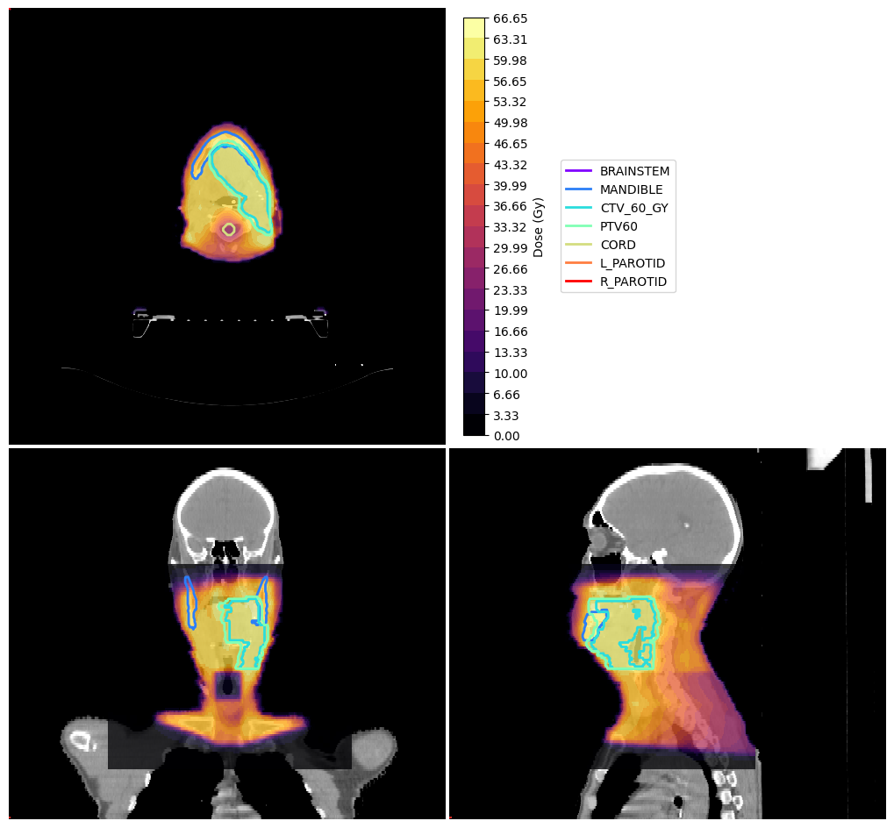
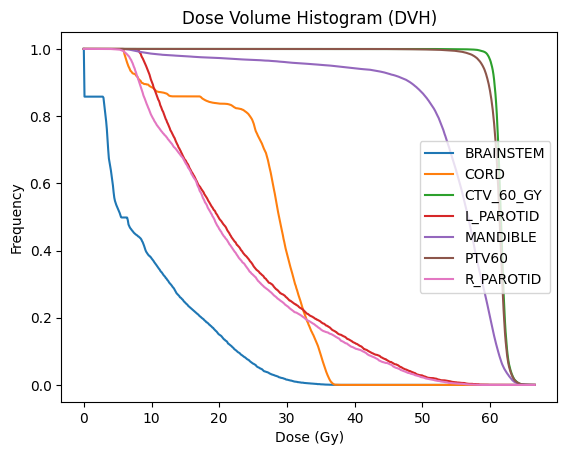

DVH Analysis#
This notebook demonstrates how to compute and plot a DVH (Dose Volume Histogram).
Import Modules#
[1]:
try:
import platipy
except:
!pip install git+https://github.com/pyplati/platipy.git
import platipy
import matplotlib.pyplot as plt
import SimpleITK as sitk
%matplotlib inline
from platipy.imaging.tests.data import get_hn_nifti
from platipy.imaging import ImageVisualiser
from platipy.imaging.label.utils import get_com
from platipy.imaging.dose.dvh import calculate_dvh_for_labels, calculate_d_x, calculate_v_x
Download Test Data#
This will download some data from the TCIA TCGA-HNSC dataset. The data is for one patient and contains a CT, dose and some structures.
[2]:
data_path = get_hn_nifti()
Load data#
Let’s read in the data that we’ve downloaded
[3]:
test_pat_path = data_path.joinpath("TCGA_CV_5977")
ct_image = sitk.ReadImage(str(test_pat_path.joinpath("IMAGES/TCGA_CV_5977_1_CT_ONC_NECK_NECK_4.nii.gz")))
dose = sitk.ReadImage(str(test_pat_path.joinpath("DOSES/TCGA_CV_5977_1_PLAN.nii.gz")))
dose = sitk.Resample(dose, ct_image)
structure_names =["BRAINSTEM", "MANDIBLE", "CTV_60_GY", "PTV60", "CORD", "L_PAROTID", "R_PAROTID"]
structures = {
s: sitk.ReadImage(str(test_pat_path.joinpath("STRUCTURES", f"TCGA_CV_5977_1_RTSTRUCT_{s}.nii.gz"))) for s in structure_names
}
Visualise data#
and now let’s visualise the data we’ve got
[4]:
vis = ImageVisualiser(ct_image, cut=get_com(structures["PTV60"]))
vis.add_scalar_overlay(dose, discrete_levels=20, colormap=plt.cm.get_cmap("inferno"))
vis.add_contour(structures)
fig = vis.show()

Compute DVH#
here we compute the DVH using the dose and structures loaded. We get the DVH back in a pandas DataFrame object.
[5]:
dvh = calculate_dvh_for_labels(dose, structures)
Plot DVH#
using the pandas DataFrame, we plot the DVH here
[6]:
plt_dvh = dvh.melt(id_vars=["label", "cc", "mean"], var_name="bin", value_name="dose")
fig, ax = plt.subplots()
for key, grp in plt_dvh.groupby(['label']):
ax = grp.plot(ax=ax, kind='line', x='bin', y='dose', label=key)
plt.legend(loc='best')
plt.xlabel("Dose (Gy)")
plt.ylabel("Frequency")
plt.title("Dose Volume Histogram (DVH)")
plt.show()
/tmp/ipykernel_8586/1046574561.py:4: FutureWarning: In a future version of pandas, a length 1 tuple will be returned when iterating over a groupby with a grouper equal to a list of length 1. Don't supply a list with a single grouper to avoid this warning.
for key, grp in plt_dvh.groupby(['label']):

DVH Metrics#
Finally, we extract commonly used metrics from the DVH, such as D95 or V40.
[7]:
df_metrics_d = calculate_d_x(dvh, 95)
df_metrics_d
[7]:
| label | D95 | |
|---|---|---|
| 0 | BRAINSTEM | 0.035205 |
| 1 | MANDIBLE | 36.565625 |
| 2 | CTV_60_GY | 60.255060 |
| 3 | PTV60 | 58.903234 |
| 4 | CORD | 6.558704 |
| 5 | L_PAROTID | 9.182000 |
| 6 | R_PAROTID | 7.333571 |
[8]:
df_metrics_v = calculate_v_x(dvh, 40)
df_metrics_v
[8]:
| label | V40 | |
|---|---|---|
| 0 | BRAINSTEM | 0.000000 |
| 1 | MANDIBLE | 59.137344 |
| 2 | CTV_60_GY | 190.980434 |
| 3 | PTV60 | 280.184746 |
| 4 | CORD | 0.000000 |
| 5 | L_PAROTID | 0.946522 |
| 6 | R_PAROTID | 1.392365 |